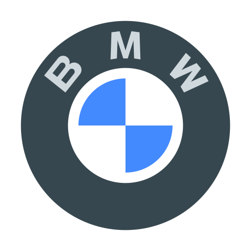

BMW E38🚀 - автомобіль з кузовом «седан» класу «люкс». Дебютував у червні 1994 року, змінивши 2-е покоління 7-ї серії BMW E32. Модель випускалася аж до 2001 року, коли їй на зміну прийшла нова «сімка» BMW E65/E66 2002 модельного року. Модель зазнала значних змін як у зовнішньому вигляді, так і під капотом. Дизайн багато в чому визначено попереднім кузовом Е32 (зовні) і деякими деталями всередині. Дизайн салону згодом став прототипом для п'ятої серії в кузові Е39 (зменшена копія). Ексклюзивні варіанти моделі були так само представлені в подовжених кузовах: 740iL і 750iL
BMW 7-series (F01) - це представницький седан, що вражає своєю елегантністю та потужністю. Його стильний зовнішній вигляд поєднує спортивність і класичні риси бренду BMW. Він оснащений потужними бензиновими та дизельними двигунами, що забезпечують швидкість і динаміку на дорозі. Внутрішній інтер'єр вражає розкішшю та високоякісними матеріалами, а також передовими технологіями, що забезпечують комфорт та безпеку пасажирів. Його динамічне керування та відмінна маневреність роблять його чудовим вибором для тих, хто цінує комфорт і водійські якості. Базова комплектація автомобіля включає в себе: шкіряну оббивку сидінь, 4-зонний клімат-контроль, регульовані сидіння з підігрівом і вентиляцією, супутникову навігацію, Bluetooth, аудіосистему Harmon Kardon. Стандартна система безпеки БМВ включає в себе: 6 подушок безпеки, камеру з 360 градусним оглядом, парктронік, активний круїз-контроль, а також систему екстреного гальмування з розпізнаванням пішоходів.
BMW 7-series (G70)  - це витончена симфонія елегантності та технологічної переваги. Його кузов відзначається плавними лініями, що підкреслюють його розкіш та динамічний характер. Внутрішній простір вражає сучасністю, обтічністю та вишуканістю дизайну, а використання найновіших технологій в керуванні та комфорті робить його справжнім майстерством інженерії. Моторна гама включає різноманітні варіанти, починаючи від потужних бензинових до гібридних модифікацій, які поєднують в собі ефективність та динаміку. Його передова система керування та безпеки допомагає водію на кожному кроці, забезпечуючи не лише відмінній комфорт, але і безпеку під час поїздок. Це авто, що об'єднує розкош та інновації, створене для тих, хто цінує вишуканість та передові технології в автомобільній індустрії.